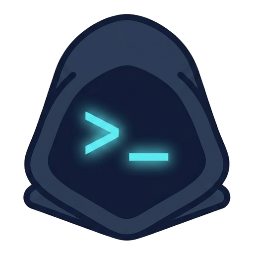

moody@technopriest building// binary liturgy — machine-spirit: awakening
sysadmin ——> devops engineer
Trained as a technician-programmer (4-year college). Came up through freelance web development and device repair — phones, PCs, laptops — before moving into systems administration.
Currently on night shift: provisioning workstations, maintaining WireGuard VPNs, and monitoring a comms node with Zabbix. MikroTik RouterOS is a daily tool.
Building a home lab to make the move into DevOps in real conditions — not tutorial-land.